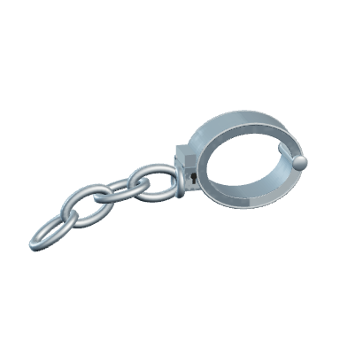
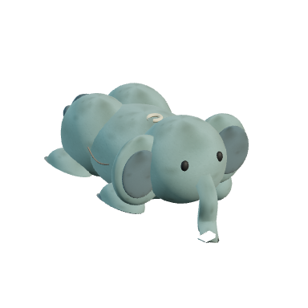

Entering the office…
Put saw down
Game over
Try again
Figsaw
I want to play a game...
What do you want to saw?


Cancel
Detach instance
⌥⌘B
05:00
Copy view
Copy this view and paste it into the chat.
Close